Introduction
In the final project, we are to demonstrate the skills and techniques that we have learnt in the module. The project must have the following components:
- Documentation - Idea, Construction, How-do, Instruction manual
- CADD and/or Digital graphic components (vector/raster)
- 2D cutting and engraving3D printed part.
- Embedded control using a microcontroller with input(s) and output(s)
The Idea
For this project, I decided to create a electric pencil sharpener.
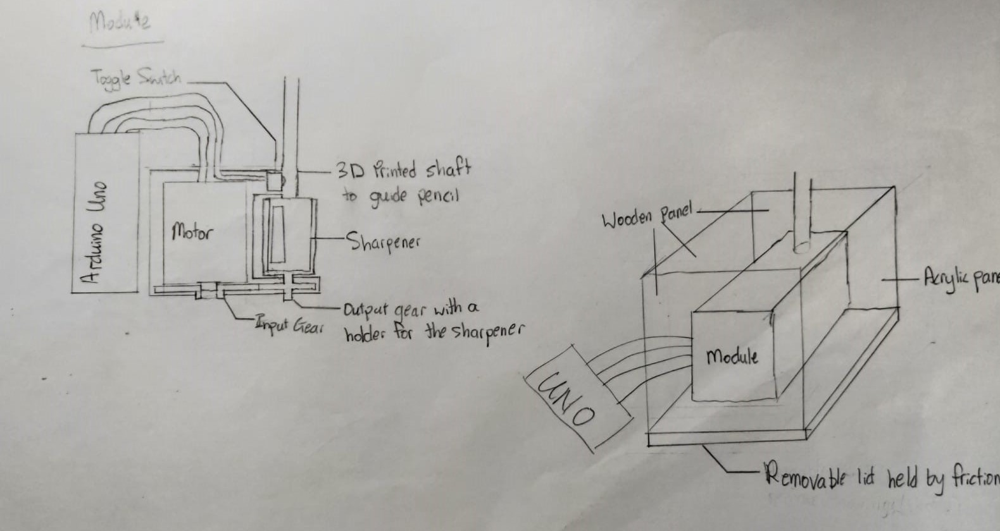I planned to first create a module that will contain the motor, 3d-printed gears and a sharpener. A switch is positioned such that it will be pressed when a pencil is inserted. This input would be read by the arduino to turn on the motor, which will rotate the sharpener to sharpen the pencil. This module is to be placed in a box where the pencil shavings would be stored in. To remove the shavings, a removable lid is placed at the bottom.
Bill of Materials
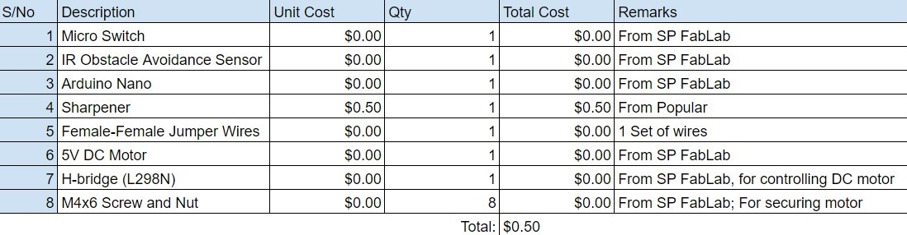For the input siwtch to detect the pencil, I decided to go with either a micro limit switch or a IR sensor. I also wanted to test the project using a Arduino Nano as it is smaller than the Uno that is provided. I also wanted to try using a 5V DC motor controlled by a H-bridge as it is more powerful than the stepper motor provided. Lastly, the screw and nut are used to secure the stepper motor.
Designing with Fusion (Part 1)
I used Fusion 360 to design the electic sharpener.
- The first model of the electic sharpner was just the module itself. I started off designing the input gear with 18 gears and output gear with 10 gears. This is to increase the speed of the sharpener as the stepper motor is quite slow. A model of the stepper motor is also used so that the input gear would fit to the motor tightly as well as to create holes in the housing to scure the motor using screws and nuts. A sharpener holder is used to hold the sharpener and is attached to the output gear, such that it spins with the gear. Finally, a hollow tube is used to guide the pencil into the sharpener.
- This model came with several problems. Firstly, the gears were designed by me and the gears may not mesh properly, causing the sharpener to fail. Secondly, there wasn't a housing to store the shapener shavings. Hence, I created another model based on the first one. Firstly, I created the gears using Tools -> Add-Ins -> Spur Gear to create the gears. This plug in would generate a gear that would mesh properly. Secondly, I redesigned the housing with holes for the wire from the stepper motor to go through. I also move the lid from the bottom to the top as well as create a rectangular hole in the pencil guide to hold the micro limit switch.
| 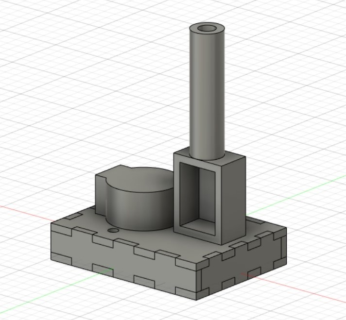 | 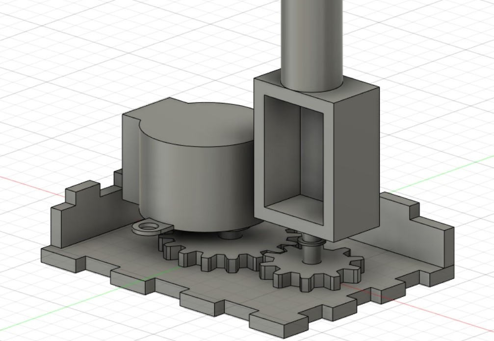 |
|---|
| 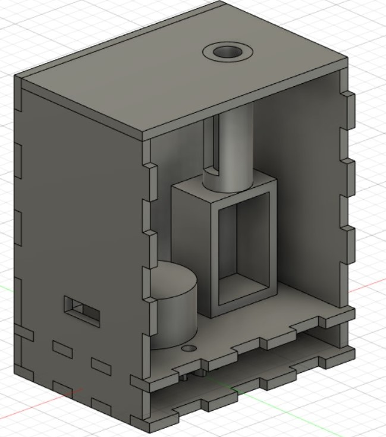 | 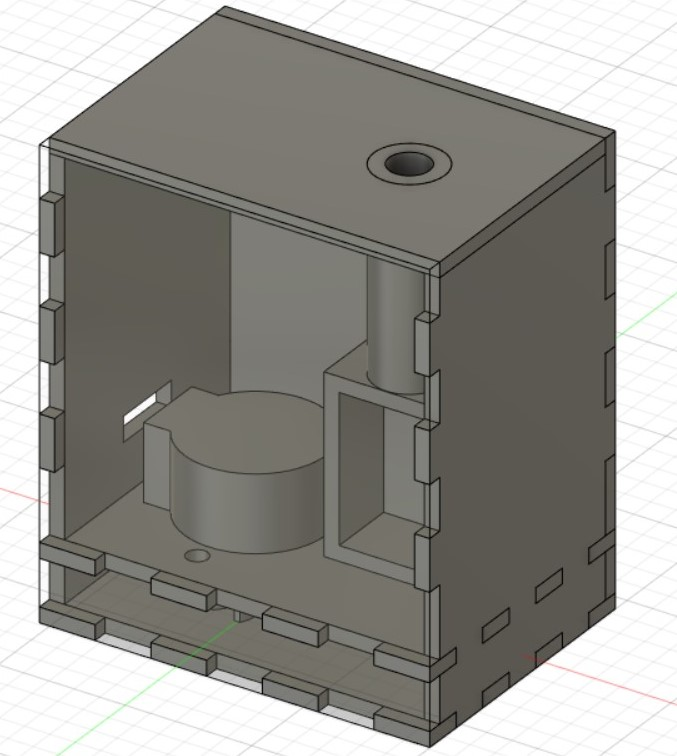 |
|---|
Laser cutting and 3D printing (Part 1)
Next, I exported the gears, pencil guide and shapener holder to STL to be 3D printed. I also exported the housing to DXF to be laser cutted.
| 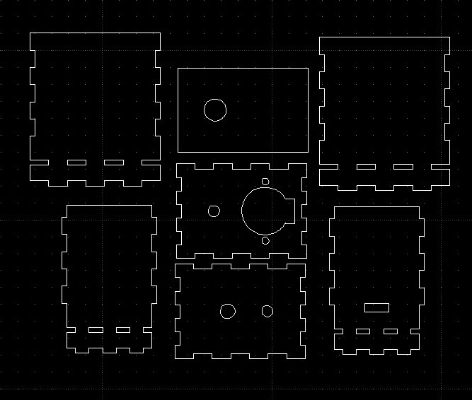 | 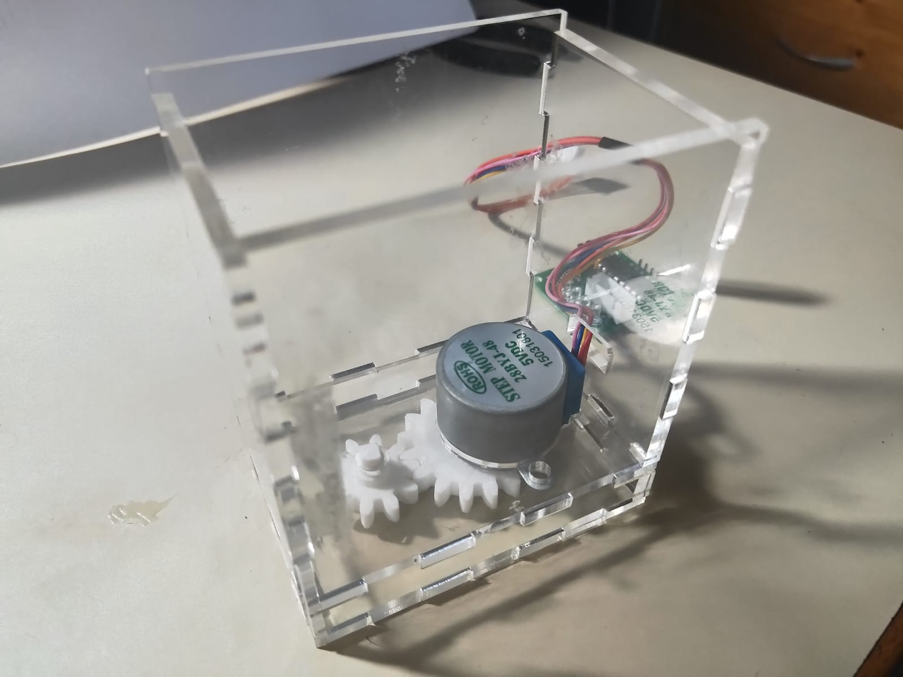 |
|---|
The sharpener holder and lid is not shown
When fitted together, I realise that the lid is not secured properly, and hence I designed a different lid made out of 3 parts such that it would fit better.
| 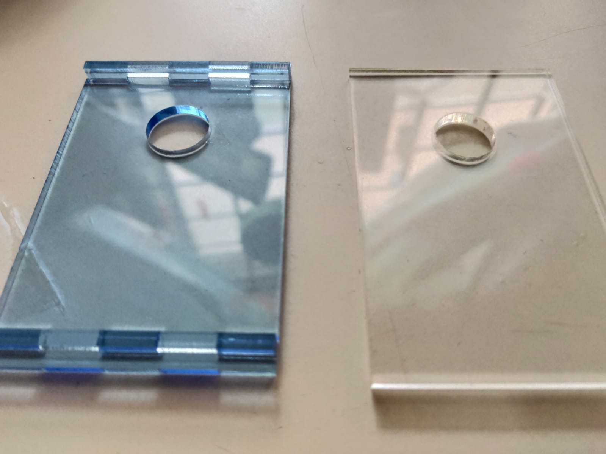 | 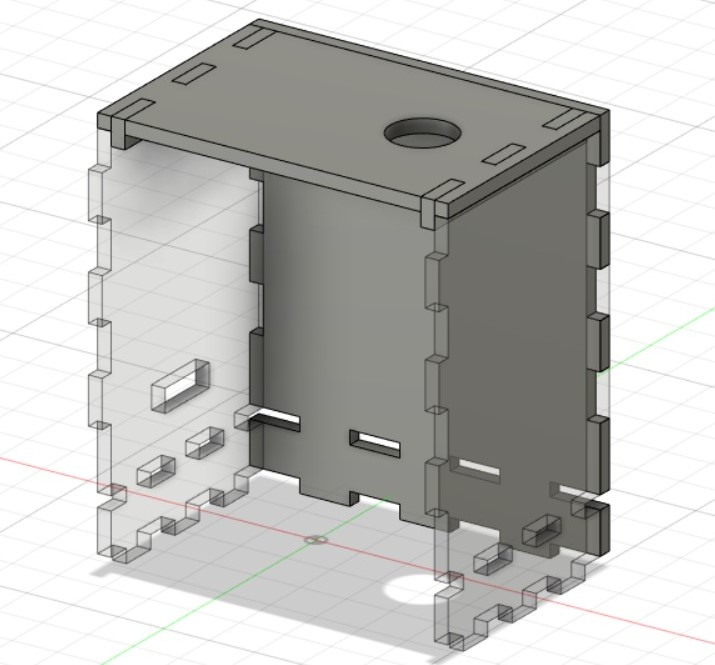 | 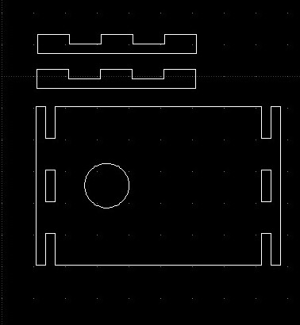 |
|---|
Left: New lid, Right: Old lid
After testing, I realised the stepper motor is still very slow, and it also is not able to sharpen the pencil as it does not have enough torque. Hence, I decided to change to use a 5V DC motor. However, because the DC motor is bigger than the stepper motor, I had to modify the fusion model.
Designing with Fusion (Part 2)
In order to incorporate a DC motor inside the electic sharpener, I had to increase the distance between the sharpener holder and the motor. I did this by increasing the number of teeth on the gears. Furthermore, because a DC motor is much faster than a stepper motor, I changed the number of teeth on the input gear to 10, and the number on the output gear to 24. I also modify the hole to hold the limit micro switch so that it fits better.
| 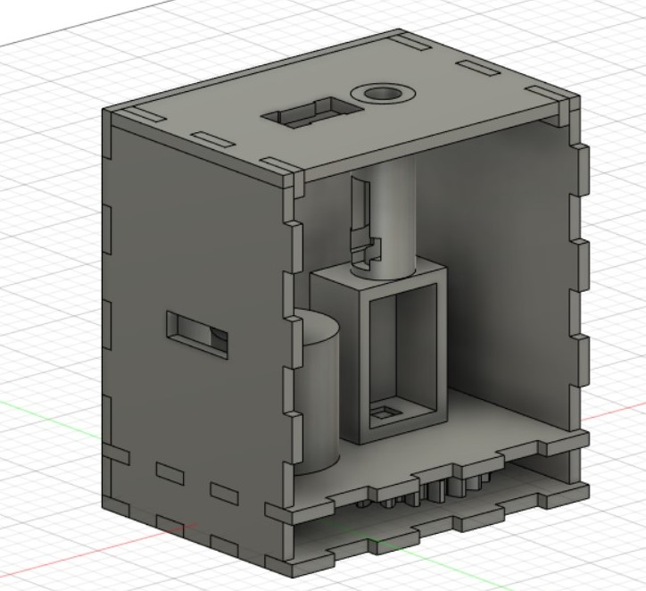 | 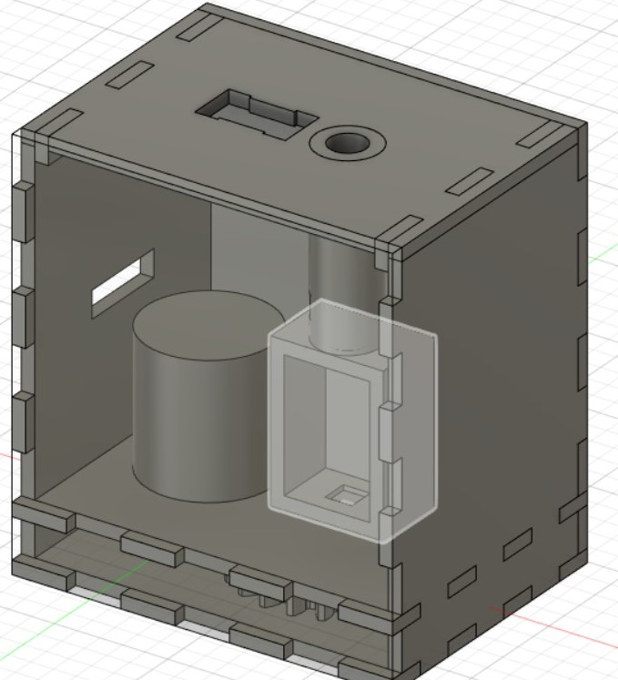 |
|---|
Laser cutting and 3D printing (Part 2)
| 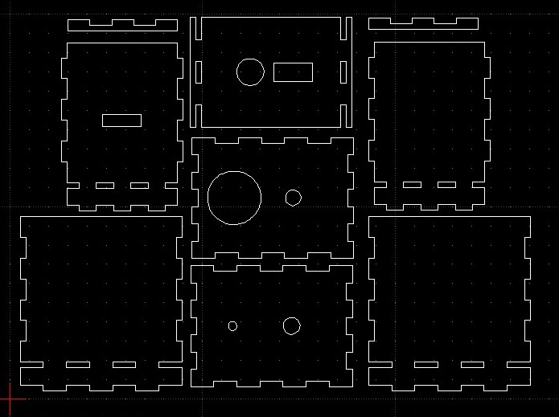 | 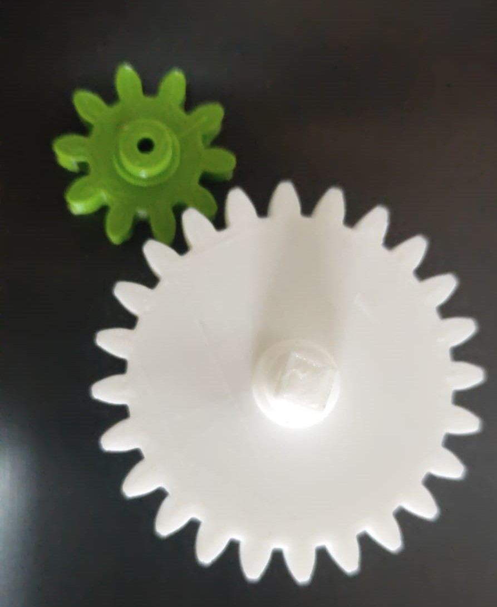 |
|---|
Electronics
To control the motor, I first tried using a H-bridge to control it. However, the motor spins with very little torque when using a H-bridge. Hence, I opted to use a NPN transistor to control it. Also, I used a flyback diode to protect the NPN transistor from current induced by the motor. Also, I used a 6V battery pack to power the circuit so that the sharpener does not require to be plugged in to be used since the UNO can store the program inside itself. Lastly, I attached a slide switch on the positive terminal of the battery pack so that the sharpener can be turned off when not in used. All the electronics are soldered and heat shrinked together.
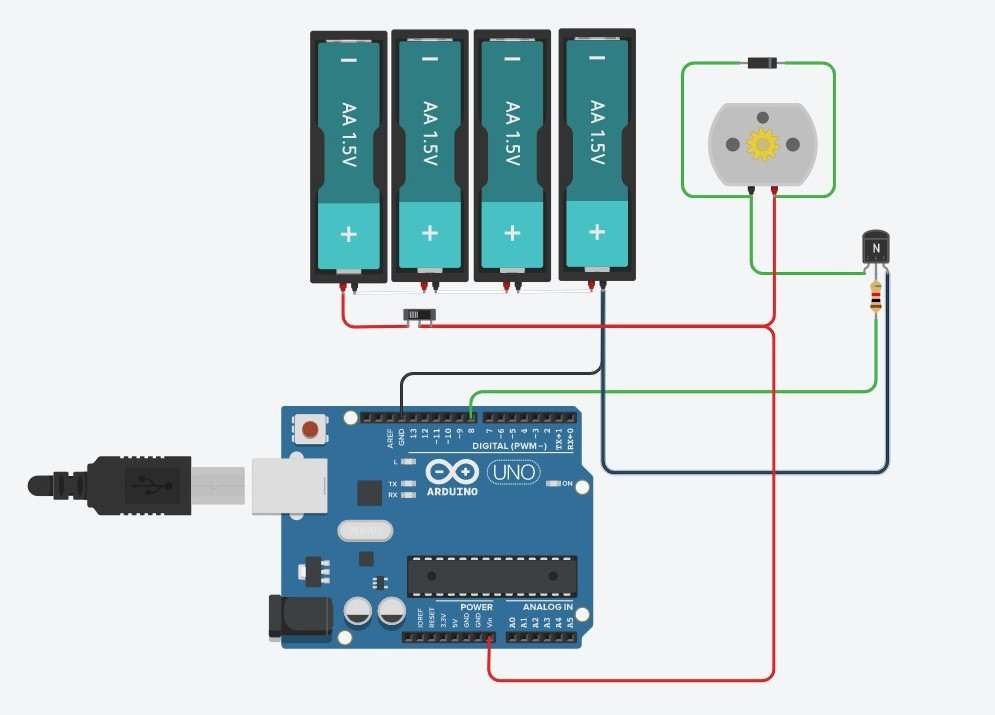Designing with Fusion (Part 3)
Initially, the electronics were to be glued outside of the box. However, I decided to create an enclosure to protect the electronics. There is also a hinged door that is held close by friction so that the user can easily access the electronics. Furthermore, there are several holes for the wires to come out from, as well as a switch to turn the sharpener.
| 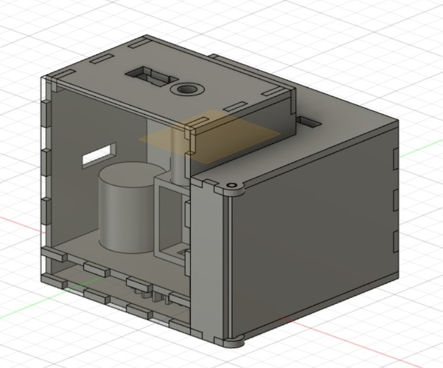 | 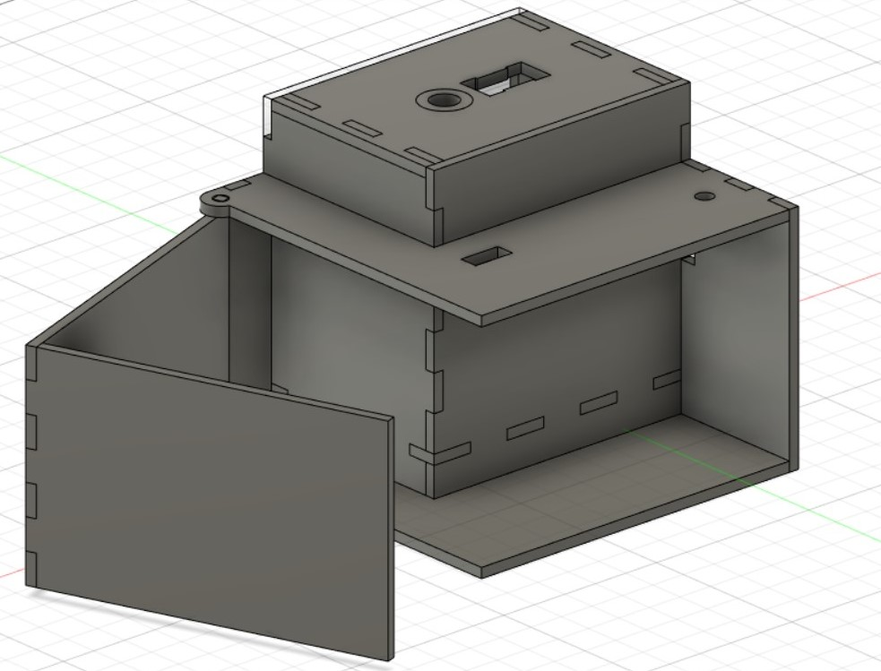 |
|---|
Electronic Box
After designing the electonic box, I laser cut it out before gluing it to the sharpener box and fit all the electonics in it.
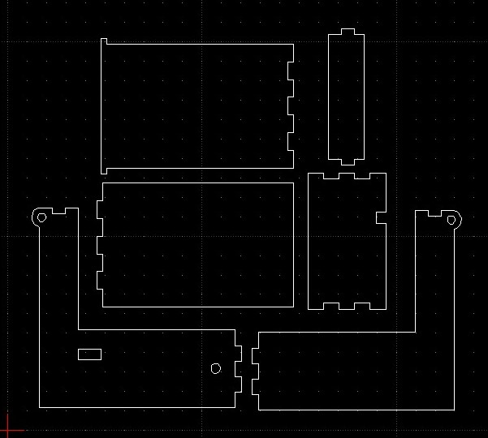I also added a red and green LED to show the status of the box. The red LED will turn on when the sharpener turns on, and the green LED will turn on when the motor is spinning. I soldered the LED to dupond wires and resistors before drilling 2 holes in the electonics box to glue the led in.